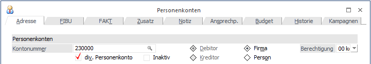

Ist ein Personenkonto im Personenkontenstammblatt als "diverses Personenkonto" gekennzeichnet, kann im Mahnwesen trotzdem jede Adresse einzeln gemahnt werden, sofern in der Belegerfassung / Faktura auch die entsprechenden Adressen eingetragen worden sind und die Belege noch nicht durch Reorganisieren eliminiert worden sind.

Sobald ein "Diverser Debitor" in der Belegerfassung der WinLine Fakturierung aufgerufen worden ist, bleibt der Cursor in der Adresseingabe stehen, damit die Kundendaten im Beleg eingegeben werden können.
Nach Übergabe der Buchungssätze in die Finanzbuchhaltung, kann das Mahnwesen wie gewohnt durchgeführt werden. Sobald eine Faktura eines "Diversen Personenkontos" in der Mahnung relevant wird, holt das Programm die Informationen des Kunden aus den Daten des Belegkopfes der Faktura.
Achtung
Daher dürfen die erledigten Belege (d.h. die fakturierten Belege) von diversen Personenkonten erst reorganisiert werden, wenn Sie sicher sind, dass alle zugehörigen OPs in der FIBU bereits bezahlt und ausgeziffert worden sind (sonst würden die personenspezifischen Informationen wie Straße, PLZ und Ort, etc. fehlen).
Beim Drucken von Mahnungen für div. Debitoren muss jede Mahnstufe eingeschränkt und einzeln gedruckt werden.